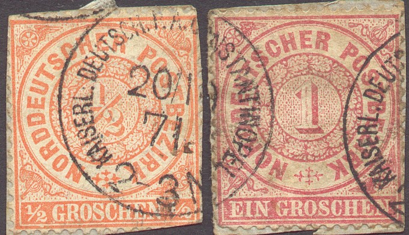
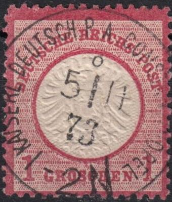
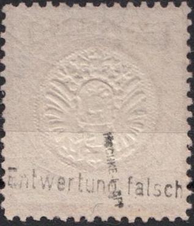
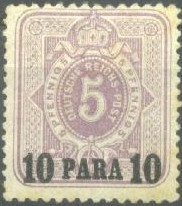
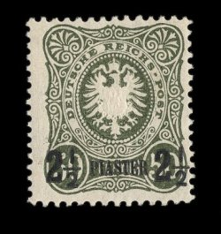
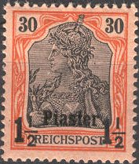
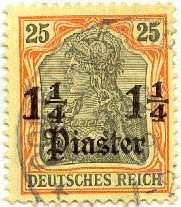
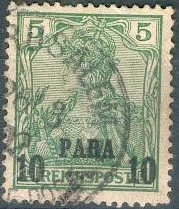
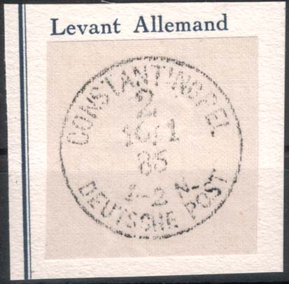

{kind=link}


Note: on my website many of the
pictures can not be seen! They are of course present in the cd's;
contact me if you want to purchase them.
The first German post office in Turkey was opened in 1870 in Constantinopel (now called Instanbul). Post offices existed in Beirut, Constantinopel, Jaffa, Jersusalem and Smyrna. In the first period the stamps of the North German Confederation and the German Empire were used, examples:
(Reduced size)
I've also seen postal stationary from Germany (without any overprint), being used in Constantinopel (10 p red 1884 design of Germany, inscription 'Postkarte - Carte postale Weltpostverein - Union postale universelle').
 
Forged cancel on genuine German stamp "KAISERL DEUTSCH P.A.
CONSTANTINOPEL 8 5/11 73 2N"

'10 PARA 10' on 5 p lilac '20 PARA 20' on 10 p red '1 PIASTER 1' on 20 p blue '1 1/4 PIASTER 1 1/4' on 25 p brown '2 1/2 PIASTER 2 1/2' on 50 p grey
Value of the stamps |
|||
vc = very common c = common * = not so common ** = uncommon |
*** = very uncommon R = rare RR = very rare RRR = extremely rare |
||
| Value | Unused | Used | Remarks |
| 10 pa on 5 p | *** | *** | Reprint (10000 copies printed): ** |
| 20 pa on 10 p | *** | R | 2 Types (overprint about 16 1/2 mm or 17 mm) Reprint (10000 copies printed): ** |
| 1 Pi on 20 p (overprint blue) | RR | R | Reprint : *** |
| 1 Pi on 20 p (overprint black) | *** | * | Reprint : * |
| 1 1/4 Pi on 25 p | R | R | 2 Types (type I: '4' touches or doesn't touch large
'1') Reprint (9000 copies printed): ** |
| 2 1/2 Pi on 50 p | RR | R | 2 Types (type II: 'P' higher than other letters) Reprint (7600 copies printed): ** |
The reprints were made in 1891. I've been told that they have a more 'shining' overprint than the genuine overprints. Example of a reprint:

Reprints with forged cancels exist.
A 'reprint' of the 1 Pi on 20 p light blue stamp was made by the forger Fouré (not to be confused with the forger Fournier!). Fournier also made forged overprints:
Fournier forgery: these forged
overprints were taken from a 'Fournier Album of Philatelic
Forgeries'
This might be a forged overprint, the letters of the overprint
are slightly different from the genuine stamps. Also, the stamp
has a "DORTMUND" train cancel?
Forged 1 1/4 Pi overprint in a totally different type.
'10 PARA 10' on 5 p green '20 PARA 20' on 10 p red '1 PIASTER 1' on 20 p blue '1 1/4 PIASTER 1 1/4' on 25 p orange '2 1/2 PIASTER 2 1/2' on 50 p brown\
Value of the stamps |
|||
vc = very common c = common * = not so common ** = uncommon |
*** = very uncommon R = rare RR = very rare RRR = extremely rare |
||
| Value | Unused | Used | Remarks |
| 10 pa on 5 p | * | * | |
| 20 pa on 10 p | * | * | |
| 1 Pi on 20 p | * | c | |
| 1 1/4 Pi on 25 p | ** | ** | |
| 2 1/2 Pi on 50 p | * | * | |
Typical 'CONSTANTINOPEL DEUTSCHE POST' cancel
Fournier forgery: these forged
overprints were taken from a 'Fournier Album of Philatelic
Forgeries'.
Postal stationary: I've seen a 'Postkarte' in the
20 pa on 10 p red design. The inscription is 'Postkarte -
Weltpostverein Carte postale - Union postale universelle'.
I've also seen a postcard (20 pa on 10 p red) with inscription
'Postkarte mit Antwort - Weltpostverein Carte postale avec
reponse payee - Union postale universelle'.
Another envelope exists with no inscription: 20 pa on 10 p red.
'PARA' or 'PIASTER' on 'REICHSPOST' issue

'10 PARA 10' on 5 p green '20 PARA 20' on 10 p red '1 PIASTER 1' on 20 p blue '1 1/4 PIASTER 1 1/4' on 25 p orange and black on yellow '1 1/2 PIASTER 1 1/2' on 30 p orange and black '2 PIASTER 2' on 40 p red and black '2 1/2 PIASTER 2 1/2' on 50 p violet and black '4 PIASTER 4' on 80 p red and black on red
Value of the stamps |
|||
vc = very common c = common * = not so common ** = uncommon |
*** = very uncommon R = rare RR = very rare RRR = extremely rare |
||
| Value | Unused | Used | Remarks |
| 10 pa on 5 p | c | c | Two types, see explanation after 'Mark' issues |
| 20 pa on 10 p | c | c | Two types, see explanation after 'Mark' issues |
| 1 Pi on 20 p | c | c | Two types, see explanation after 'Mark' issues |
| 1 1/4 Pi on 25 p | * | ** | |
| 1 1/2 Pi on 30 p | * | * | |
| 2 Pi on 40 p | * | * | |
| 2 1/2 Pi on 50 p | * | ** | |
| 4 Pi on 80 p | ** | ** | |
Larger size
'5 PIASTER 5' on 1 M red '10 PIASTER 10' on 2 M blue '15 PIASTER 15' on 3 M violet '25 PIASTER 25' on 5 M red an black
There are two types of this overprint, easily distinguishable by the 'A' of 'PIASTER' or 'PARA', this letter has no top stroke in type I, it has a top stroke in type II.
(Two types of the overprint, left for the 1 M stamps and right
for 5 p stamps; on top type I and below type II)
Value of the stamps |
|||
vc = very common c = common * = not so common ** = uncommon |
*** = very uncommon R = rare RR = very rare RRR = extremely rare |
||
| Value | Unused | Used | Remarks |
| 5 Pi on 1 M | *** | *** | Two types |
| 10 Pi on 2 M | *** | *** | Two types |
| 15 Pi on 3 M | R | R | |
| 25 Pi on 5 M | RR | RR | Two types |
'PARA' or 'PIASTER' (in gothic) on 'DEUTSCHES REICH' issue of 1903

'10 PARA 10' on 5 p green '20 PARA 20' on 10 p red '1 PIASTER 1' on 20 p blue '1 1/4 PIASTER 1 1/4' on 25 p orange and black on yellow '1 1/2 PIASTER 1 1/2' on 30 p orange and black '2 PIASTER 2' on 40 p red and black '2 1/2 PIASTER 2 1/2' on 50 p violet and black '4 PIASTER 4' on 80 p red and black on red
Value of the stamps |
|||
vc = very common c = common * = not so common ** = uncommon |
*** = very uncommon R = rare RR = very rare RRR = extremely rare |
||
| Value | Unused | Used | Remarks |
| No watermark (1905) | |||
| 10 pa on 5 p | * | * | |
| 20 pa on 10 p | * | * | |
| 1 Pi on 20 p | * | c | |
| 1 1/4 Pi on 25 p | * | ** | |
| 1 1/2 Pi on 30 p | * | ** | |
| 2 Pi on 40 p | ** | ** | |
| 2 1/2 Pi on 50 p | * | *** | |
| 4 Pi on 80 p | ** | ** | |
| With watermark 'Lozenges' (1906) | |||
| 10 pa on 5 p | c | c | |
| 20 pa on 10 p | c | c | |
| 1 Pi on 20 p | c | c | |
| 1 1/4 Pi on 25 p | ** | *** | |
| 1 1/2 Pi on 30 p | * | * | |
| 2 Pi on 40 p | * | * | |
| 2 1/2 Pi on 50 p | ** | *** | |
| 4 Pi on 80 p | ** | ** | |
Larger size
'5 PIASTER 5' on 1 M red '10 PIASTER 10' on 2 M blue '15 PIASTER 15' on 3 M violet '25 PIASTER 25' on 5 M red an black
Value of the stamps |
|||
vc = very common c = common * = not so common ** = uncommon |
*** = very uncommon R = rare RR = very rare RRR = extremely rare |
||
| Value | Unused | Used | Remarks |
| No watermark (1905) | |||
| 5 Pi on 1 M | *** | *** | |
| 10 Pi on 2 M | *** | R | |
| 15 Pi on 3 M | R | R | |
| 25 Pi on 5 M | RR | RR | |
| With watermark 'Lozenges' (1906) | |||
| 5 Pi on 1 M | *** | ** | |
| 10 Pi on 2 M | R | *** | |
| 15 Pi on 3 M | *** | RR | |
| 25 Pi on 5 M | *** | R | |
Cancels, examples:
(stamp cancelled in Smyrna, reduced size)

Postal stationary: I've seen envelopes with a 10
pa on 5 p green design similar to the stamps (I've seen both
'REICHSPOST' and 'DEUTSCHES REICH') with no additional
inscription.
I've also seen a 'Postkarte' in the 20 pa on 10 p red design
('REICHSPOST'), the inscription is 'Postkarte mit Antwort -
Weltpostverein Carte postale avec reponse payee - Union postale
universelle' (text in two lines).
Another 20 pa on 10 p red ('DEUTSCHES REICH' also exist with
inscription Postkarte mit Antwort - Weltpostverein Carte postale
avec reponse payee - Union postale universelle' (text in four
lines).
Again another 'Postkarte' in the 20 pa on 10 p red design
('REICHSPOST') has the inscription 'Postkarte - Weltpostverein
Carte postale - Union postale universelle'.
In the 'DEUTSCHES REICH' design also exists a 20 pa on 10 p red
with inscription 'Postkarte' only.
Some private postal stationary also exists: 'Deutsche
Palastina-Bank' ('DEUTSCHES REICH'): 1 Pi on 20 p and 2 Pi on 40
p.
Fournier forged overprints:
forged Fournier overprints, taken from a Fournier Album.
'5 Centimes' on 5 p green '10 Centimes' on 10 p red '25 Centimes' on 20 p blue '50 Centimes' on 40 p red and black '100 Centimes' on 80 p red and black on red
These stamps have watermark 'Lozenges'.
Value of the stamps |
|||
vc = very common c = common * = not so common ** = uncommon |
*** = very uncommon R = rare RR = very rare RRR = extremely rare |
||
| Value | Unused | Used | Remarks |
| 5 c on 5 p | c | * | |
| 10 c on 10 p | c | * | |
| 25 c on 20 p | * | *** | |
| 50 c on 40 p | *** | *** | |
| 100 c on 80 p | *** | R | |
I've seen postal stationery in this design in the value 5 c on 5 p and 10 c on 10 p ('Postkarte'):
In the Fournier Album of Philatelic Forgeries the following cancel can be found: 'CONTANTINOPEL 2 10/1 85 1-2N DEUTSCHE POST':

The cancel reads "CONSTANTINOPEL 2 16/1 85 1-2 N DEUTSCHE
POST" in a single circle. In another Fournier Album I have
seen a similar cancel, but with date '15/1 86' (the 5 and 6 are
inverted).
If anybody has seen this forged cancel used on stamps, please contact me!
{kind=link}
{kind=link}
{kind=link}
{kind=link}